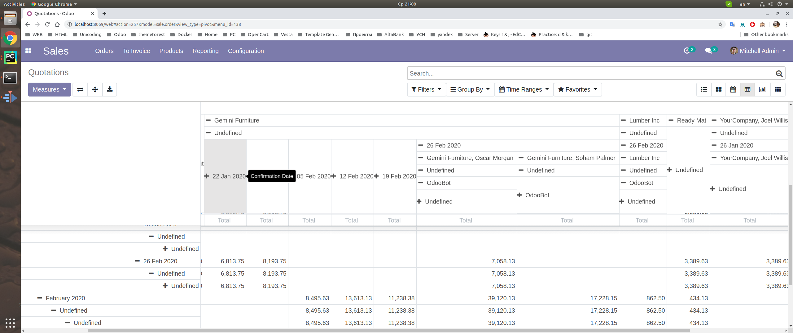

<div style="margin-left:100px;margin-right:100px;">
<h2>Description</h2>
 This Module Can Fixed Header columns left and top in pivot<br>
<section class="oe_container">
    <div class="oe_row oe_spaced">
        <br/>
        <h2 class="oe_slogan">Installation</h2>
        <div class="oe_span12">
            1. Only install module
            

        <br/>
            Suitable for enterprise and community versions odoo 12<br/><br/><br/>
        </div>

        <h2 class="oe_slogan">Youtube</h2>
        <p align="center">
            <a href="https://youtu.be/OFKa5tBW_68" target="_blank">Watch YouTube Video</a>
        </p>

    </div>
</section>


<br/>
Find a bug? feature idea? send an email to info@teambelarus.net<br>
</div>
